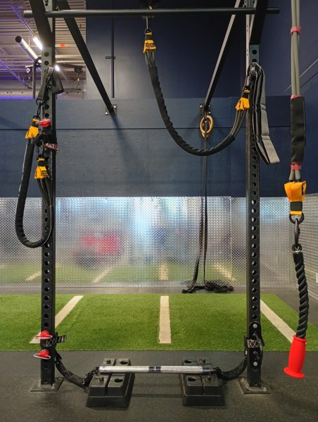
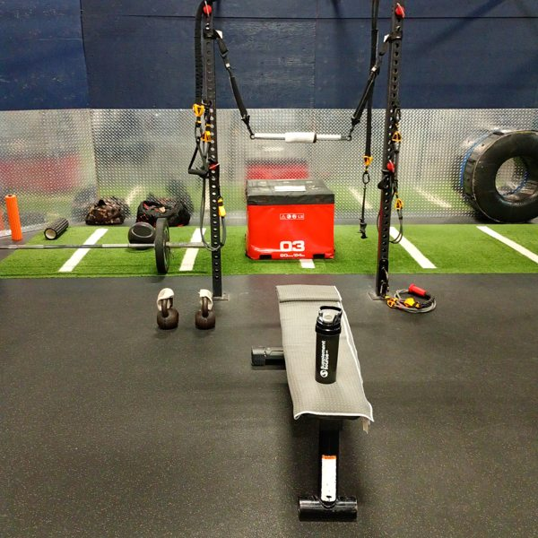
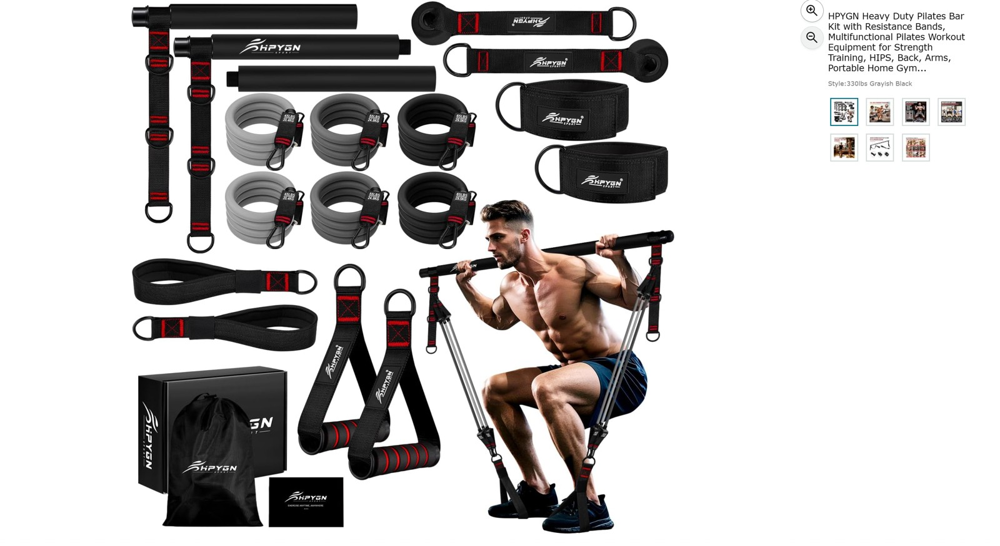

Downward and overhead lines
Lat sweeps, pulldowns, overhead triceps and face-pull variations. Bench or kneeling support sets the torso position relative to the line.
Two resistance systems. A connected full-body routine. The actual anchors, attachments and movement patterns behind my sessions.
 Portable rig arrangement 1 ↗
Portable rig arrangement 1 ↗ Portable rig arrangement 2 ↗
Portable rig arrangement 2 ↗ Portable rig arrangement 3 ↗
Portable rig arrangement 3 ↗ Portable rig arrangement 4 ↗
Portable rig arrangement 4 ↗ Portable rig arrangement 5 ↗
Portable rig arrangement 5 ↗ Portable rig arrangement 6 ↗
Portable rig arrangement 6 ↗ Portable rig arrangement 7 ↗
Portable rig arrangement 7 ↗ Portable rig arrangement 8 ↗
Portable rig arrangement 8 ↗ Portable rig arrangement 9 ↗
Portable rig arrangement 9 ↗ Portable rig arrangement 10 ↗
Portable rig arrangement 10 ↗ Portable rig arrangement 11 ↗
Portable rig arrangement 11 ↗ Portable rig arrangement 12 ↗
Portable rig arrangement 12 ↗ Portable rig arrangement 13 ↗
Portable rig arrangement 13 ↗
Portable rig arrangement 14 ↗ Portable rig arrangement 15 ↗
Portable rig arrangement 15 ↗
Portable rig arrangement 16 ↗Swipe through the photographs · tap any image to enlarge.
My current permanent bundle composition:
| Bundle | Composition | Nominal total | Deployment |
|---|---|---|---|
| The Juggernaut | 3 × 85 lb | 255 lb | Heavy chest pressing and standing press vectors |
| The Titan | 4 × 75 lb | 300 lb | Posterior-chain loading and heavy rows |
| The Enforcer | 2 × 65 lb, twice | 130 lb per set | Two separate matched sets for back work |
| The Tricep Specialist | 3 × 55 lb | 165 lb | THEFITGUY single rope · red bell-shaped stop |
| The Viper | 4 × 45 lb | 180 lb | Shoulder raises and finisher variations |
| The Scalpel | 4 × 35 lb | 140 lb | Isolation and deltoid fly variations |
Band labels are nominal ratings. Their sums identify the bundles; they are not measured force at the hands, a constant load through the repetition, or a hardware load rating.
Lat sweeps, pulldowns, overhead triceps and face-pull variations. Bench or kneeling support sets the torso position relative to the line.
Rows, rear-delt sweeps, reverse flyes and side extensions. Facing, side-on and unilateral positions change the direction the torso must resist.
Kickbacks and selected drive configurations. The starting distance, hand height and split stance define the working path.
| Interface | Role in the recorded system |
|---|---|
| THEFITGUY single rope | Current dedicated 3 × 55 lb triceps bundle; red bell-shaped stop. |
| Angles90 grips | Independent pulling grips described in the Kinetic Rig Architecture reel. |
| INNSTAR stirrup handles | Pressing interface documented in the rig architecture caption. |
| BLUSLM double-arm rope | Alternate rope documented in the earlier architecture; separate from the current THEFITGUY pairing. |
| Straight bar | Bilateral pressdowns in Series 004; distinguish this interface from the short-band bar system below. |
| Suspension straps / rings | Bodyweight support and balance variations; not interchangeable with elastic-band resistance ratings. |
Expand a movement for its setup, attachment, motion and recorded cues. These entries combine the resistance series with the band work in mixed-session reels.
Recorded in: Warmups Stretch 001
Recorded in: Upside Down Tuesdays
Recorded in: Resistance Band Series 001
Recorded in: Resistance Band Series 004; Hypertrophy Friday
Recorded in: Resistance Band Series 004
Recorded in: Resistance Bands Fridays; Resistance Band Series 001
Recorded in: Resist Saturdays
Recorded in: Resist Saturdays; Strength Fridays
Recorded in: Resistance Band Series 002
Recorded in: Resistance Bands Fridays
Recorded in: Resistance Band Series 001; Strength Fridays
Recorded in: Resistance Band Series 004
Recorded in: Resistance Band Series 004
Recorded in: Resistance Band Series 004
Recorded in: Resist Saturdays
Recorded in: Resist Saturdays
Recorded in: Resist Saturdays
Recorded in: Resistance Band Series 002
Recorded in: Hypertrophy Friday; Resistance Bands Fridays
Recorded in: Resist Saturdays
Recorded in: Resistance Band Series 003
Recorded in: Resistance Band Series 003; Plyosoft Box Core 001
Current owner-confirmed bundle counts take precedence over earlier reel configurations. Movement descriptions document my sessions; they do not establish a medical recovery outcome.
A separate compact system: two HPYGN heavy-duty kits paired with the Tribe Lifting three-piece threaded chrome bar and its rotating eyelets.
Two identical hybrid bundles · 240 lb combined nominal. Each side contains one 65 lb band and one 55 lb band. This is separate from the KUZARO Enforcer’s two matched 65 lb sets. Actual resistance varies with stretch and geometry.

The owner-confirmed system uses grey-black HPYGN bands with red-edge stitching. The supplied kit illustration shows the accessory family; the working bar is the separately specified Tribe Lifting chrome bar.
The image is a manufacturer kit illustration, including a stock exercise demonstration. It is not a photograph of my personal assembled station.
Swipe through the photographs · tap any image to enlarge.
These photographs document the shared bar/bench environment. The exact HPYGN hybrid pairing is specified above rather than inferred from a distant photograph.
Recorded in: Owner-confirmed setup
Recorded in: Owner-confirmed setup
Recorded in: Calibrated Hypertrophy / Kinetic Rig Architecture
Use the same hybrid pairing, attachment arrangement and starting stretch when comparing this system across sessions. Record repetitions, range and controlled return alongside the configuration. The compact short-band bar station and the rack-based KUZARO grid remain separate entries in the training log.